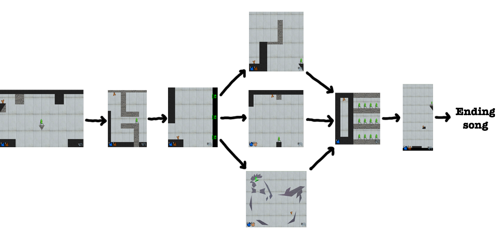
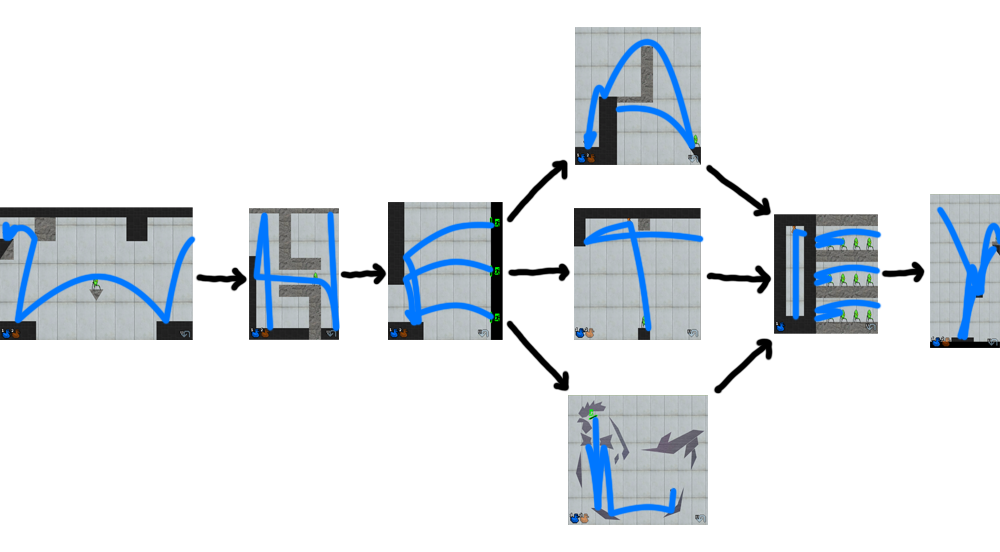

Written by DD Liu (branched from GLaDUCKS by Alan Huang)
Progress through levels Angry Birds style by knocking over all pig-turrets to reveal an exit, then Portal style by using blue and orange portals to get one of the birds to the exit.
For individual level solutions, jump here.
Here is the level structure:
Note: The level gottahatchemall has 3 exits which all lead to different levels. The branches converge again on the level jailbird, where you can control only 1 bird, and the orange portal starts in different places depending on which branch you came from. In order to complete jailbird, you need to get to it from all 3 branches.
Extract by taking the path of the birds on each level, shown in blue. The answer is WHEATLEY.
Note: The paths shown trace a minimum-step solution, but the levels are designed so that any reasonably close to minimal solution should still work for extraction.
Individual Level Solutions:
Author's Notes
This puzzle was rated an easier puzzle because the solution is guessable after solving only about half of the levels (WHEATLEY is a character from Portal). Part of the reason the levels branch is to make the letter order slightly ambiguous, so that hopefully more of the puzzle needs to be completed in order to get the answer.
Happily for me, most teams seem to have enjoyed (?) the whole puzzle before calling in an answer. We know this from the many answer attempts, including THE CAKE IS A PI (3 teams), the entire 90-character URL of the final page (3 teams), most lines of the song Still Alive, DUCKROLLD, various descriptions of a cake/cupcake/muffin/pie crossed with eggs/nest/ice cream/whipped cream/cherry, GABE THE DOG (3 teams), BLACK FOREST HAM (...?), and WHAT THE DUCK IS THE LAST STEP.